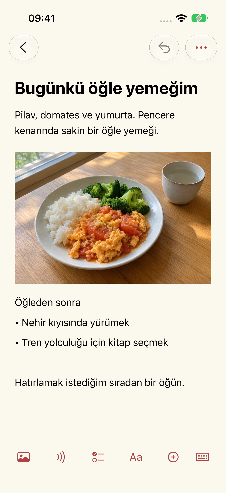
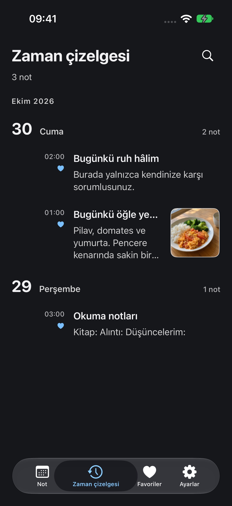

Yardım ve destek
Güncelleme: 2026-10-29
Mowyns'i neden yaptım?
Basit, kullanışlı ve tamamen ücretsiz bir kayıt aracı arıyordum. Uzun süre aramama rağmen bana uygun bir şey bulamadım. Bu yüzden Mowyns'i yaptım; günlük hayatımda ben de kullanıyorum.
Bugünün kendi sayfası var
Defterimi açtığımda bugünü görmek istedim. Takvim her seferinde bir günün kayıtlarını gösterir; dünkü notlar dünde kalır. Geriye bakmak istediğinizde bir tarih seçin veya zaman çizelgesinde gezinin. Eski kayıtlar saklanır, yeni güne de yer açılır.




Not
Öğle yemeğinizin fotoğrafını çekip birkaç kelime ekleyin. Yapmak istediğiniz bir şeyi not edin. Yazı, fotoğraf ve ses kayıtları aynı notta bir arada durabilir.
Tarih
Seyahatten önce tren bilgilerini, koltuk numaralarını, bilet ekran görüntülerini ve gezilecek yerleri ilgili tarihlere kaydedin. O gün geldiğinde sayfayı açın; planınız hazır olsun. Birkaç günlük not, basit bir gezi planına dönüşebilir.
Takvim
Günün listesinin en üstünde bir kez aşağı çekerek takvimi, bir kez daha çekerek hızlı aramayı açın. Takvim kapalıyken tarih başlığını sağa veya sola kaydırarak önceki ya da sonraki güne geçin.
Görünüm
Tema rengini ve açık ya da koyu görünümü seçin. Metin boyutunu ve satır aralığını kendinize göre ayarlayın.
Yeni not
Yeni Not'u seçip başlık ve metin girin. Düzenleyicinin alt araç çubuğundan fotoğraf, kayıt, liste, tablo ve dosya ekleyebilirsiniz.
Yedekleme ve taşıma
Notlar bu cihazda kaydedilir. Ayarlar → Veri Yönetimi → Yedekleme ve Taşıma bölümünden standart veya şifreli yedekleri içe ve dışa aktarabilirsiniz. Otomatik eşzamanlama yoktur; kendi yedeklerinizi saklayın.
Kayıt dökümü
Uygulama kamera veya mikrofon iznini yalnızca fotoğraf çekerken, tararken veya kayıt yaparken ister. Fotoğraf ve dosyaları sistem seçicileriyle siz seçersiniz. Bu izinleri reddetmek metin notları yazmanızı engellemez. Döküm, sistem konuşma tanıma izni gerektirir ve yalnızca cihazda yapılır. Cihaz veya dil desteklenmiyorsa kayıt korunur ve dökümün kullanılamadığı bildirilir. Uygulama bulut tanımaya geçmez. İzinleri sistem ayarlarından geri alabilirsiniz.
Son silinenler
Bir notu geri yüklemek için Ayarlar → Veri Yönetimi → Son Silinenler'i açın. Kalıcı silmeden sonra daha önce dışa aktardığınız yedek gerekir. Geliştirici notlarınızın kopyasını tutmaz.